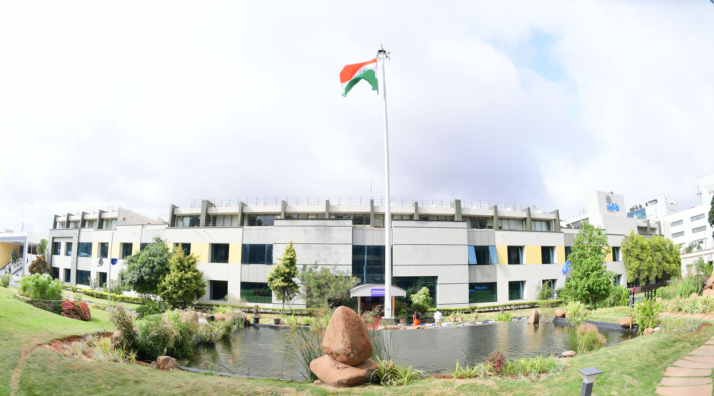
 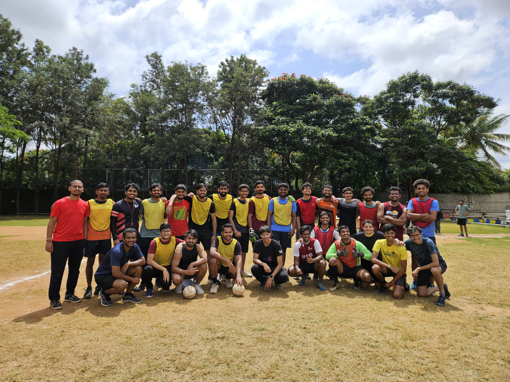
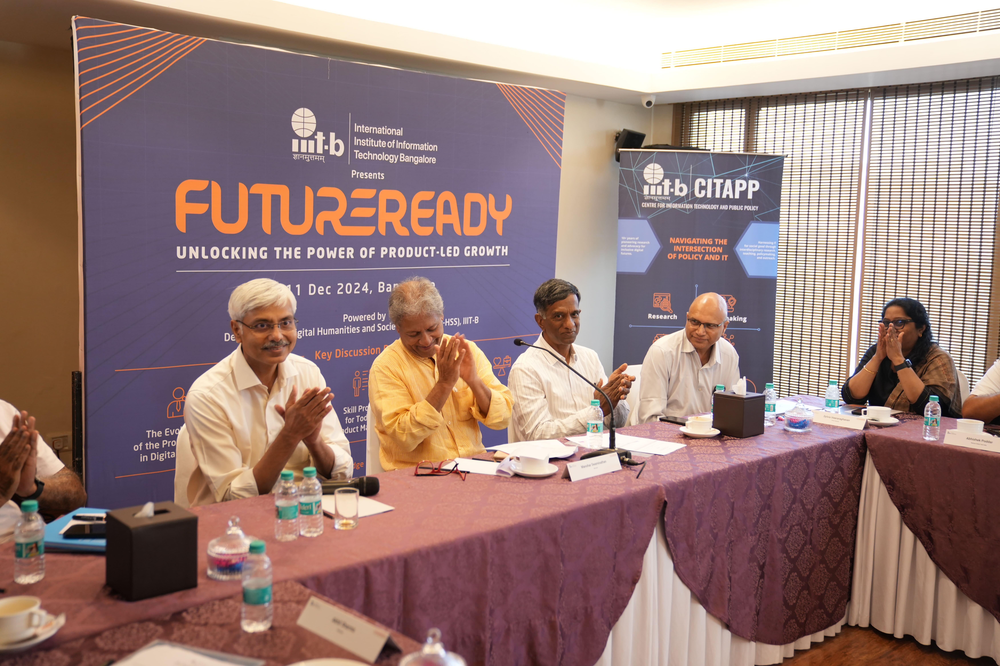
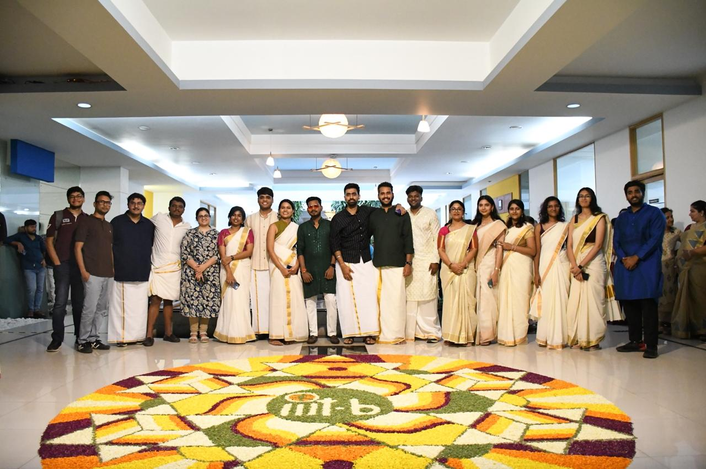
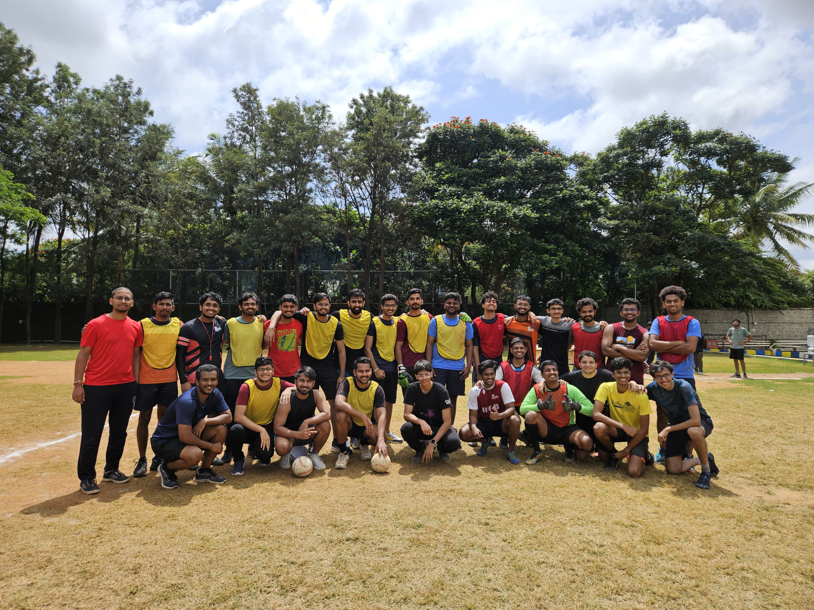
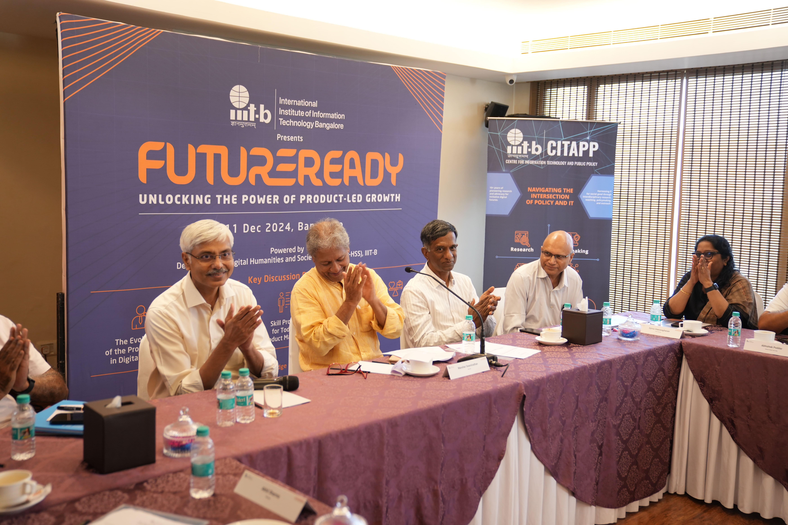
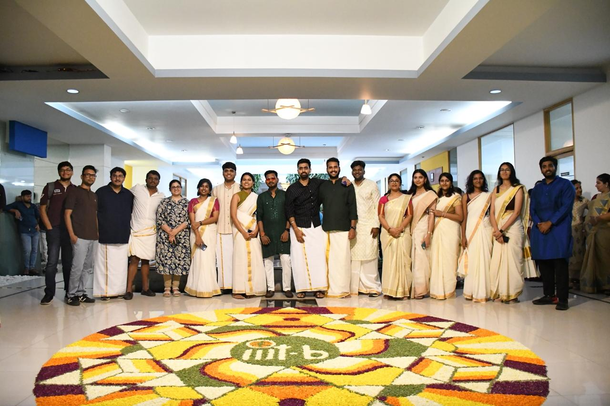


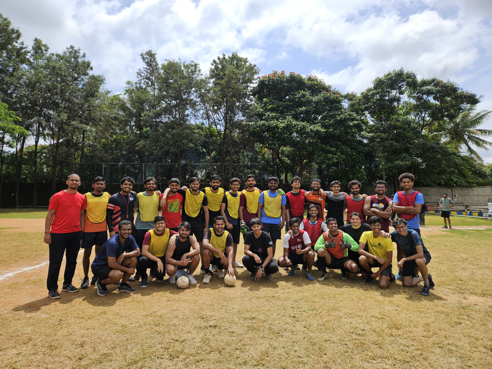
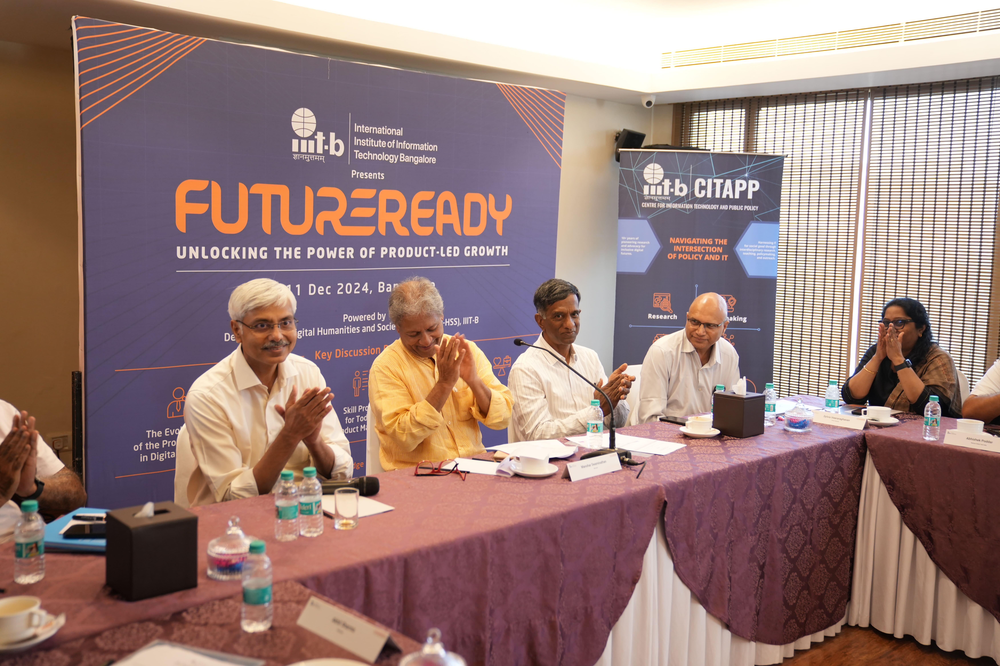
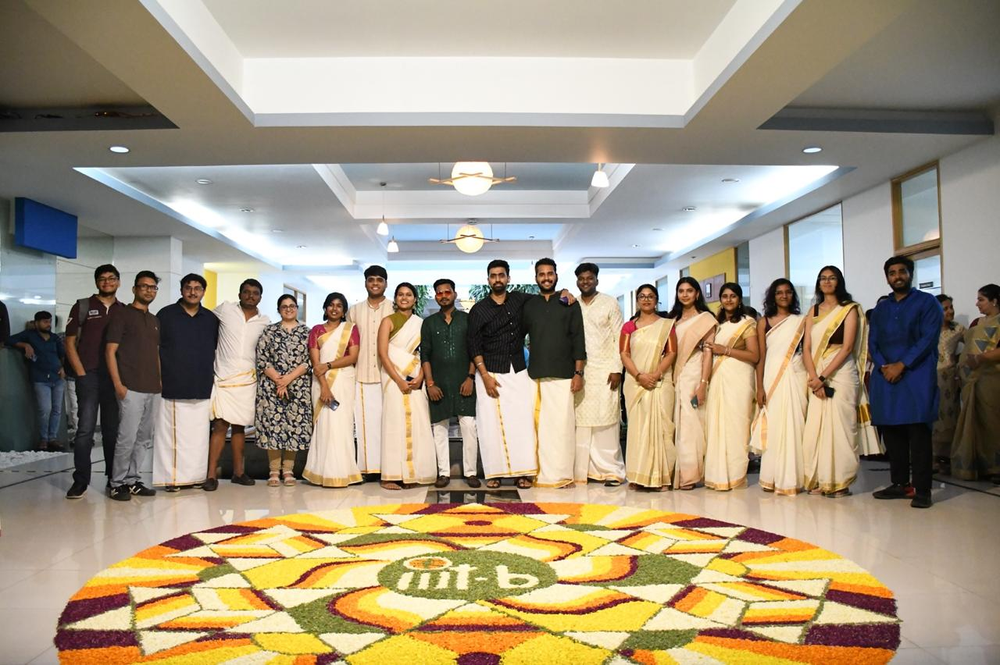
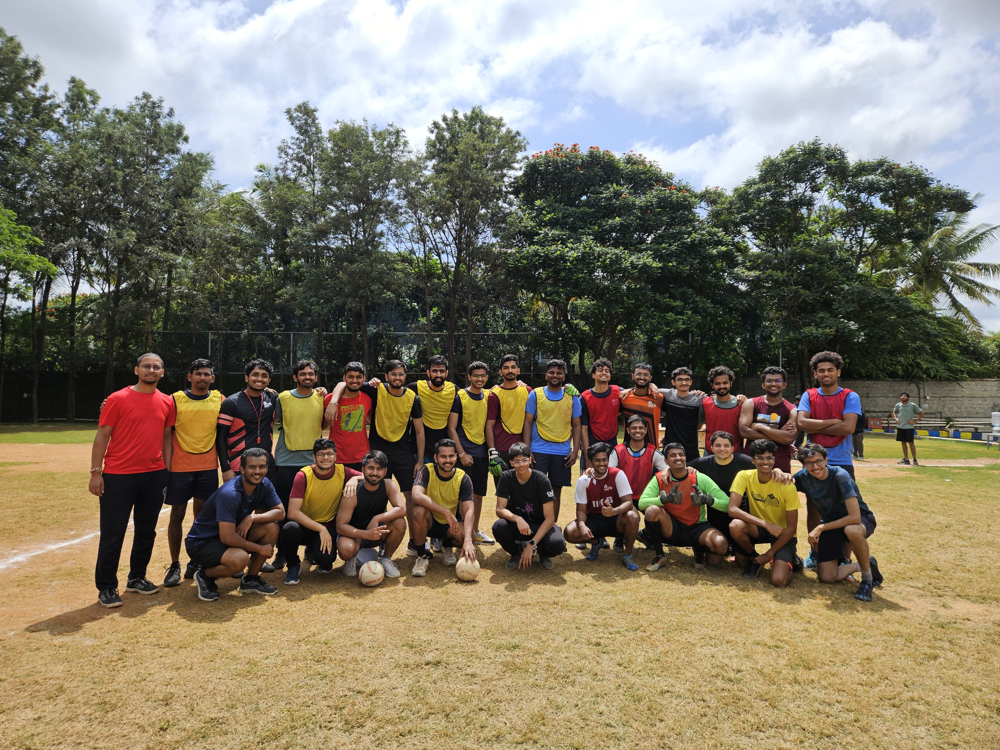
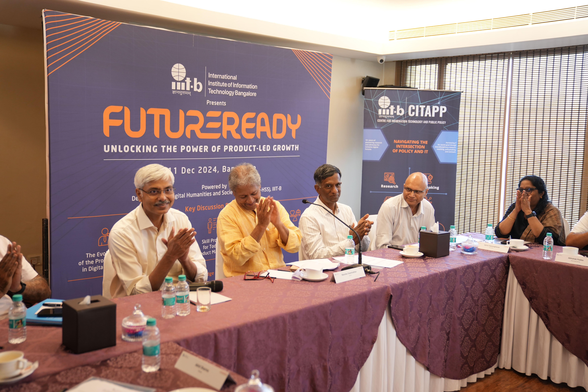
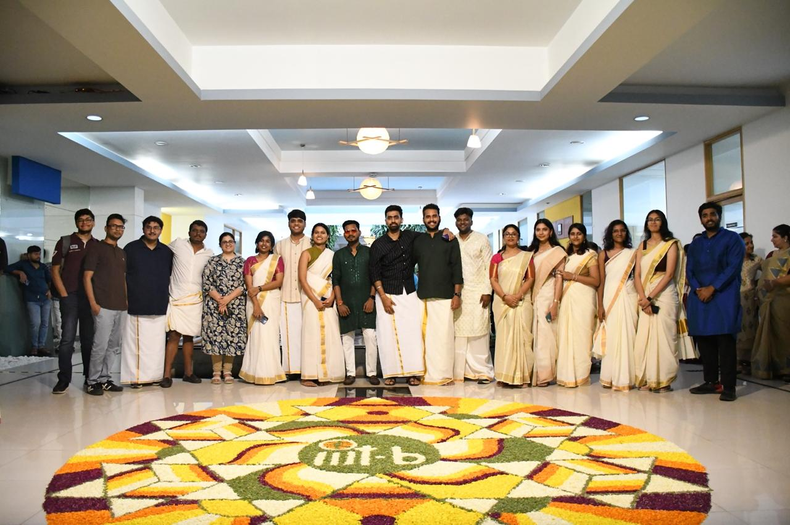
The Next Gen of Digital Product Leaders

PGP In Digital Product Design & Management program is crafted to nurture the next generation of product leaders. Through a blend of theoretical knowledge and hands-on experience, we empower students to tackle real-world challenges in the digital product space.
Enthusiastic Students
Projects
Experienced Faculty
Industry Relevant Courses
Master the art of creating intuitive and impactful user experiences.
Learn to develop and execute successful product strategies.
Understand user needs through advanced research methodologies.
Develop skills to lead product teams and drive innovation.

placements.pgp@iiitb.ac.in